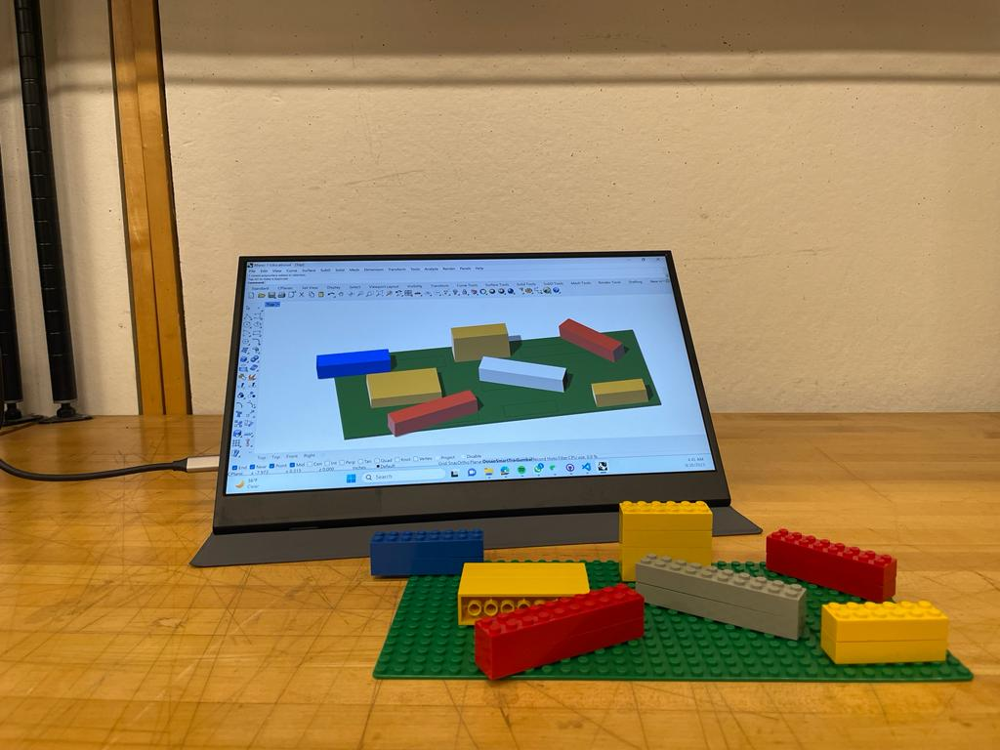
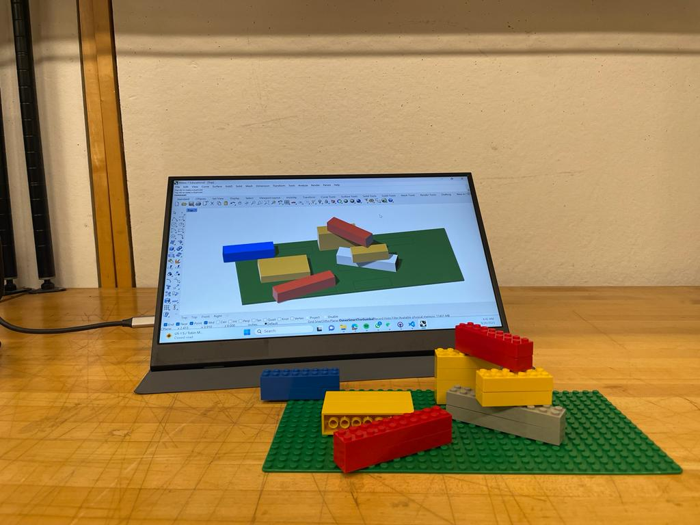
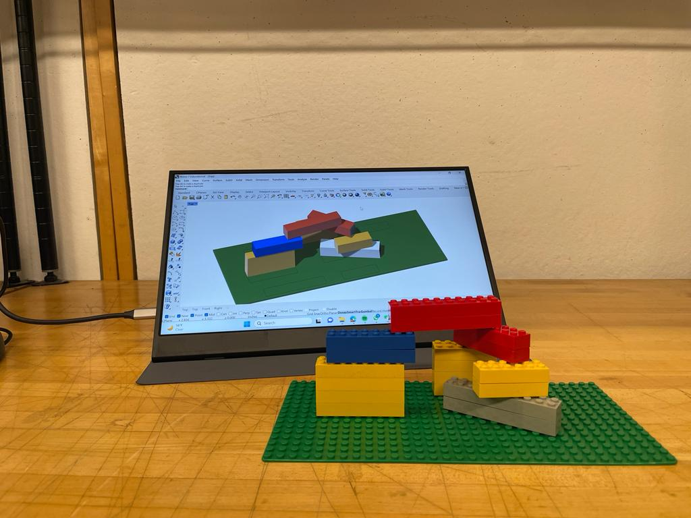
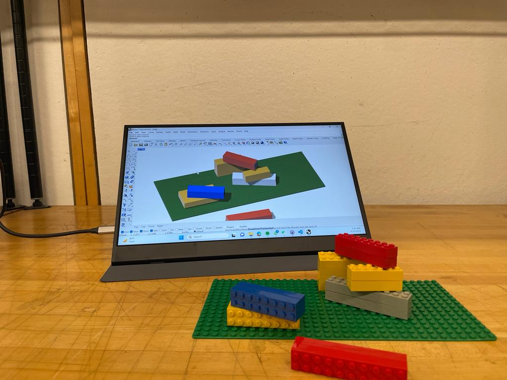

Phygital Assembly (Tangible CAD)
Digital Twin for Real-time Assembly Tracking and Physical Making. An integrated system synchronizing physical fabrication with a digital modeling environment to provide real-time feedback and facilitate assisted assembly.
Project Description
The integration of a Digital Twin for Real-time Assembly Tracking and Physical Making could be highly benifical in the making / creative process. By synchronizing physical fabrication with a digital modeling environment, this innovative system offers a real-time feedback loop, allowing designers and creators to seamlessly bridge the gap between the digital and physical realms. The ability to track and monitor the physical making process in real-time provides invaluable insights into the manufacturing intricacies and potential challenges that may arise during assembly. Real-time simulations provide immediate feedback to designers, enabling them to visualize how their designs manifest in the physical realm. This dynamic feedback loop empowers designers to iterate and adjust designs on the fly for enhanced functionality, structural integrity, and manufacturability. “A computer ought to give the architect more choice, rather than simply produce an optimum solution” – CoDesigner by Yanni Alexander Loukissas.
“A computer ought to give the architect more choice, rather than simply produce an optimum solution” – CoDesigner by Yanni Alexander Loukissas.
“Design is an iterative process involving ideation, prototyping, and refinement, achieved through reflection-in-action and a trial-and-error approach to understand unique and uncertain situations” - The Reflective Practitioner by Schon.
While digital tools have granted architects the ability to manage complex task, they are not able to support material engagement and direct sensory information that they physical world provides. 3D modeling software are still bound to 2D graphic user interface and a cartesian design space.
The potential of a design and fabrication process that facilitates a back-and-forth exchange between the physical and digital models. The project aims to use digital twins to provide an experience that is more akin to traditional design method such as physical model making, where a continuous dialogue exists between the designer and the material.
Example

Pre-Assembly

Assembly Process

Assembly Process

Assembly Falls Down
The ability to track and monitor the physical making process in real-time provides invaluable insights into the manufacturing intricacies and potential challenges that may arise during assembly.
Previous Work
Previous work I have done on using gestural recognition for "tactile" manipulation of digital geometry in Augmented Reality and connecting that with a physics simulation
Through gestural tracking, touching a physical object could generate, modify and update new digital information enabling a seamless stimuli between the physical and digital world.
Proposal
How can we use digital twins to help us design/make with nonstandard / modular / transformable / dynamic materials systems ?
Put sensors on the network system to track the deformation
How can we use digital twins to help us design/make with nonstandard / modular / transformable / dynamic materials systems ?
Potential Application
How can we use digital twins to help us design/make with nonstandard / modular / transformable / dynamic materials systems ?
How can we use digital twins to help us design/make with nonstandard / modular / transformable / dynamic materials systems ?
Previous work I have done on using gestural recognition for creating a digital twin of physical materials for feedback-based Robotic and Mixed Reality Fabrication.
Through gestural tracking, touching a physical object could generate, modify and update new digital information enabling a seamless stimuli between the physical and digital world.
The first method we developed using gestural recognition is Object Localization, which is used for human-robot collaboration in Mixed Reality.
As the physical jig moved closer to the goal position, the notation would transform from red, yellow to green as the physical jig moves closer to the goal. This workflow represents a cybernetic system in which the adjustment of the physical locator position will generate new virtual feedback for the user, thus creating a feedback loop until the desired condition is attained.